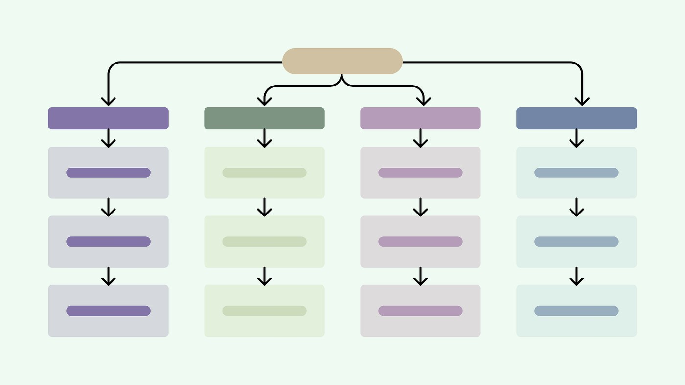

B2B EdTech: Reorganising a Complex Educational Platform
Analysed 600+ user sessions and ran 31 teacher interviews to uncover a resource-discovery problem, then redesigned the platform architecture. Testing showed 78% task success by unit vs 34% by resource type.